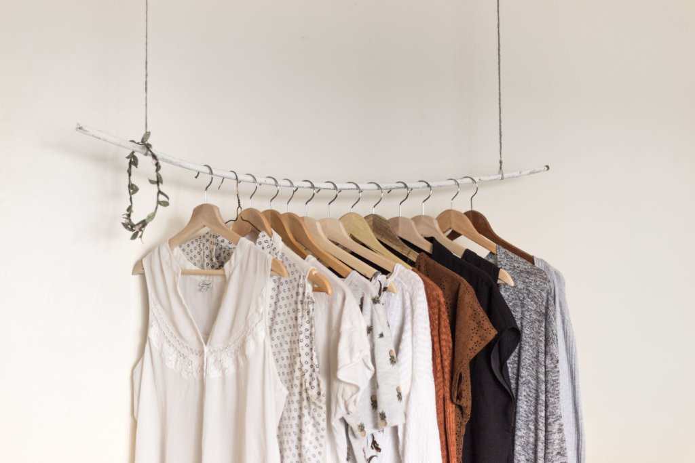

From the factory to the wardrobe...
By Filipa Isaeva
How are clothes made? (Source: Everything Bags Inc.)
Have you ever wondered where clothes come from? Were you ever curious about how they are produced? The journey begins when they are being manufactured and ends when they are at your shelf at home. But there is so much happening in between and it is not always nice and pleasant.
Who and where?
A sweatshop is a factory where workers are paid very little and work many hours in very bad conditions. Such worker’s health is constantly at risk because of the lack of resources, exposure to harmful chemicals and often physical abuse. The people who make fast fashion clothing have been confirmed to be underpaid, underfed and pushed to their limits.
...and why?
The truth is that many cheap fashion brands use child labor. According to Sofie Ovaa of Stop Child labour, the reason why children are employed is because “there is no supervision or social control mechanisms, no unions that can help them to bargain for better working conditions. These are very low-skilled workers without a voice, so they are easy targets.”

Children working in a sweatshop (Source:)
A lose-lose situation
According to The Centre for Research on Multinational Corporations, “There is a clear link between child labour and low wages for adult workers”. They argue that if “child labour was banned, labour would become more scarce, which would allow adult workers to negotiate better wages and improve labour conditions.”
This means that high levels of child labour are related with adult unemployment and underemployment. If children are being paid less than adults to do the same job, it means that families are actually worse off. If adults are paid a living wage, their children can have the opportunity to get an education, thus giving them more opportunity to break the cycle of poverty.
Forcing children to work is of no benefit to anyone.
Our responsibility
As consumers, we can create a change. If we refuse to buy products from companies that use child labour, then that company would have to find other means of production. This has been shown to work in the past with companies like Nike, which reformed its labour policies due to consumer pressure.